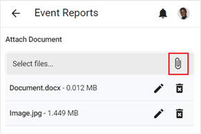
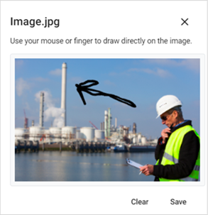
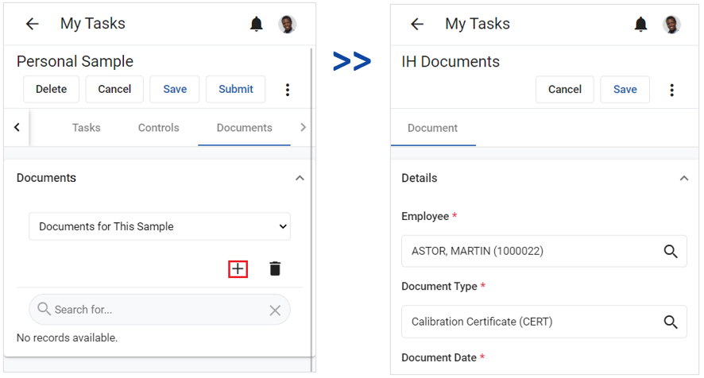
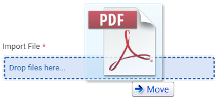
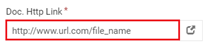

If a field or question in a record allows you to attach a document or image, a paperclip icon will display below the field/question. The icon will allow you to upload and attach one or more documents from your device.

For some fields or questions, an attached document may be required.
To remove a document or image from the list, click the Delete icon to the right of the file. If the file is an image, a Pencil icon will display next to the Delete icon.
When you click the Pencil icon, a preview of the image will display. You can then use the mouse or your finger to draw directly on the image. Click Clear to clear your annotation or Save to save it.

If a task or event report has a Documents tab, you can attach a document or image by clicking +. You will then be directed to the <Cloud> Documents screen where you can import a file and specify the document type, date, description, and other information.


When you are finished completing the <Cloud> Documents screen, click Save. The document will display in the record’s Documents tab.If you are using a desktop or laptop computer, you can also drag-and-drop files into that field.
To remove a document from the list, click the Delete icon to the right of the file.

The maximum allowable file size is determined by the Maximum File Size For Documents system setting in the Cority platform. If the file is too large to attach to the form, you can use the Doc. Http Link field to provide a link to the file instead. There is a Go to URL button to the right of the Doc. Http Link field. If you click the button, the URL will open in a separate window.When you are finished, click Save. Repeat these steps for each file you would like to add to the record.
| Audio | Image | Microsoft Excel | Microsoft PowerPoint | Microsoft Word | Misc. | Text | Video | |
.mp3 .wav .wma | .bmp .dcm .gif .jpg .jpeg .png .tif .tiff | .eml .mht .msg | .xls .xlam .xlsb .xlsm .xlsx .xltm .xltx | .potm .potx .pps .ppt .ppsm .ppsx .pptm .pptx | .doc .docm .docx .dotm .dotx .rtf | .prj | .txt .xml | .avi .mpg .mpeg .wmv |